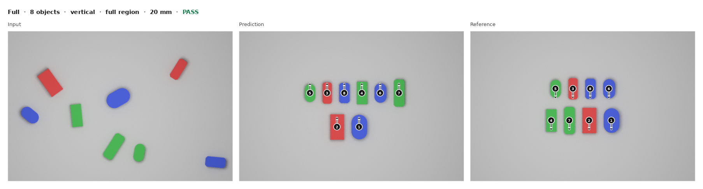
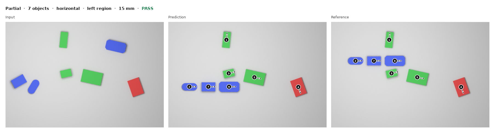
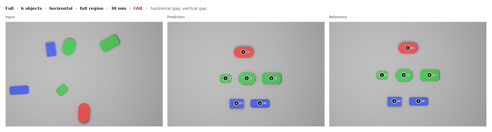
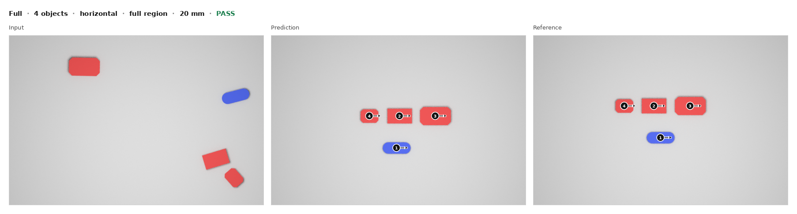
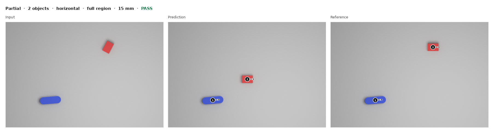
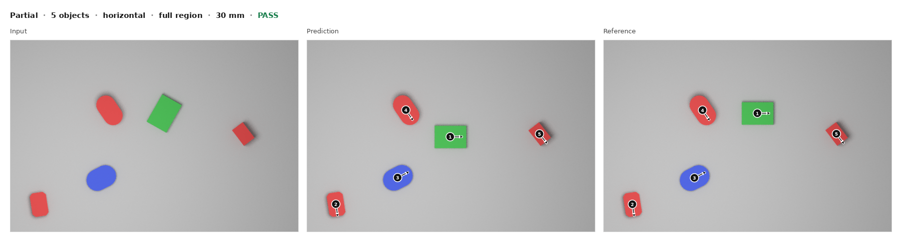
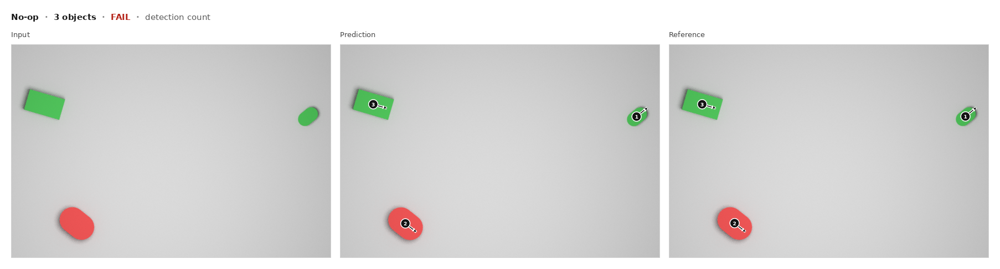
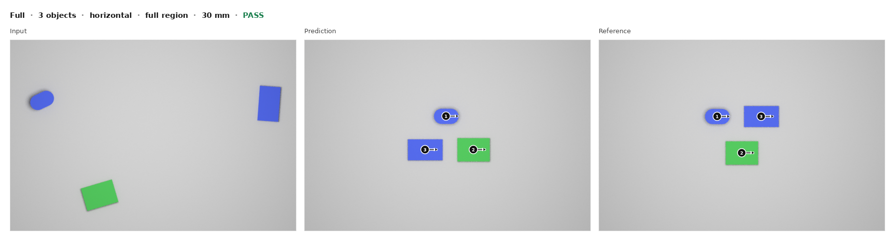

Full · 8 objects · vertical · full region · 20 mm · PASS
These are the earlier input, prediction, and reference panels for the same ten scenes. The motion figures are in the demo gallery. Seven pass and three fail. This set is not a success rate.

Full · 8 objects · vertical · full region · 20 mm · PASS

Partial · 7 objects · horizontal · left region · 15 mm · PASS

Full · 6 objects · horizontal · full region · 30 mm · FAIL · horizontal gap, vertical gap

Full · 4 objects · horizontal · full region · 20 mm · PASS

Partial · 2 objects · horizontal · full region · 15 mm · PASS

Partial · 5 objects · horizontal · full region · 30 mm · PASS

Partial · 4 objects · horizontal · full region · 30 mm · FAIL · horizontal gap

No-op · 4 objects · PASS

No-op · 3 objects · FAIL · detection count

Full · 3 objects · horizontal · full region · 30 mm · PASS